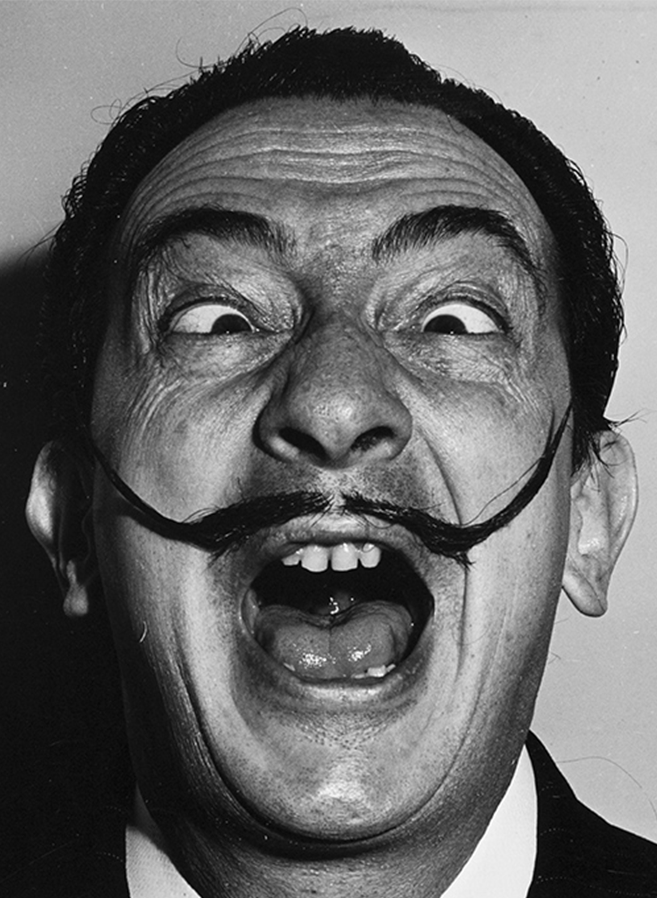

Artists
Salvador Dali
Dalí was a skilled draftsman, best known for the striking and bizarre images in his surrealist work. His painterly skills are often attributed to the influence of Renaissance masters. His best-known work, The Persistence of Memory, was completed in August 1931. Dalí’s expansive artistic répertoire included film, sculpture, and photography, in collaboration with a range of artists in a variety of media.

Engineers
Tim Berners Lee
Sir Timothy John Berners-Lee (born 8 June 1955), also known as TimBL, is an English engineer and computer scientist, best known as the inventor of the World Wide Web. He made a proposal for an information management system in March 1989, and he implemented the first successful communication between a Hypertext Transfer Protocol (HTTP) client and server via the Internet in mid-November the same year.